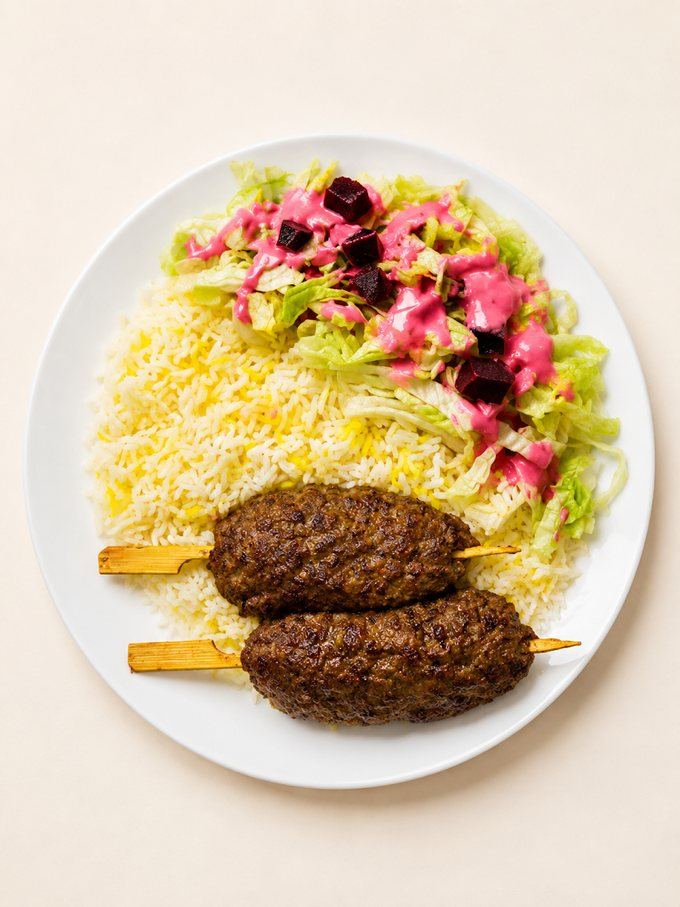
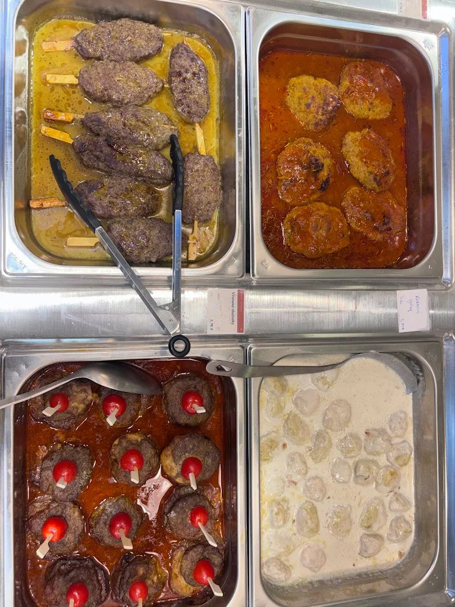
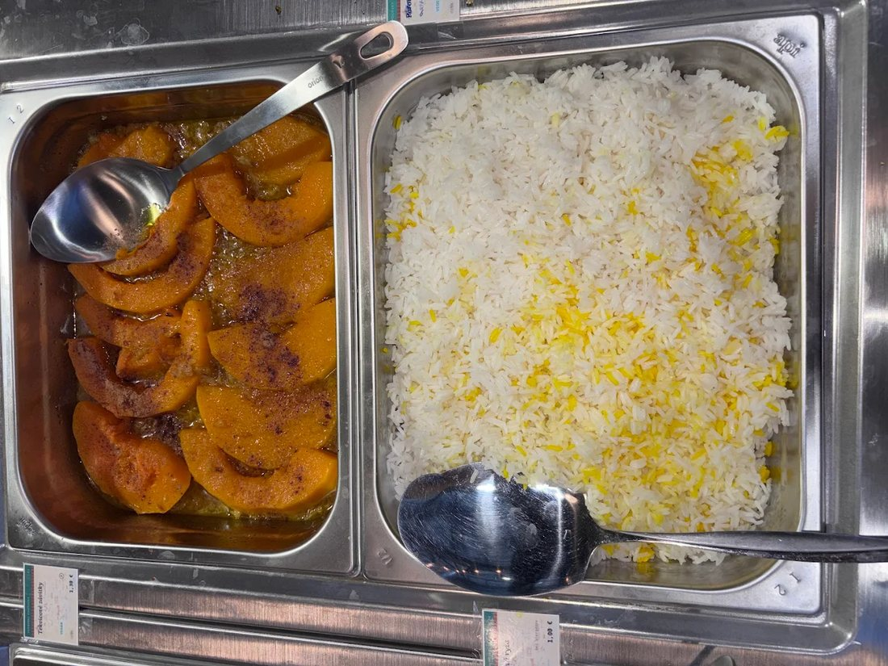
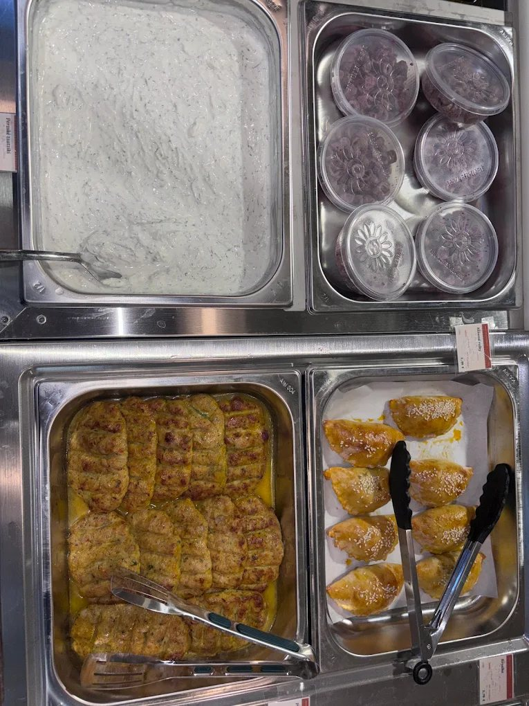
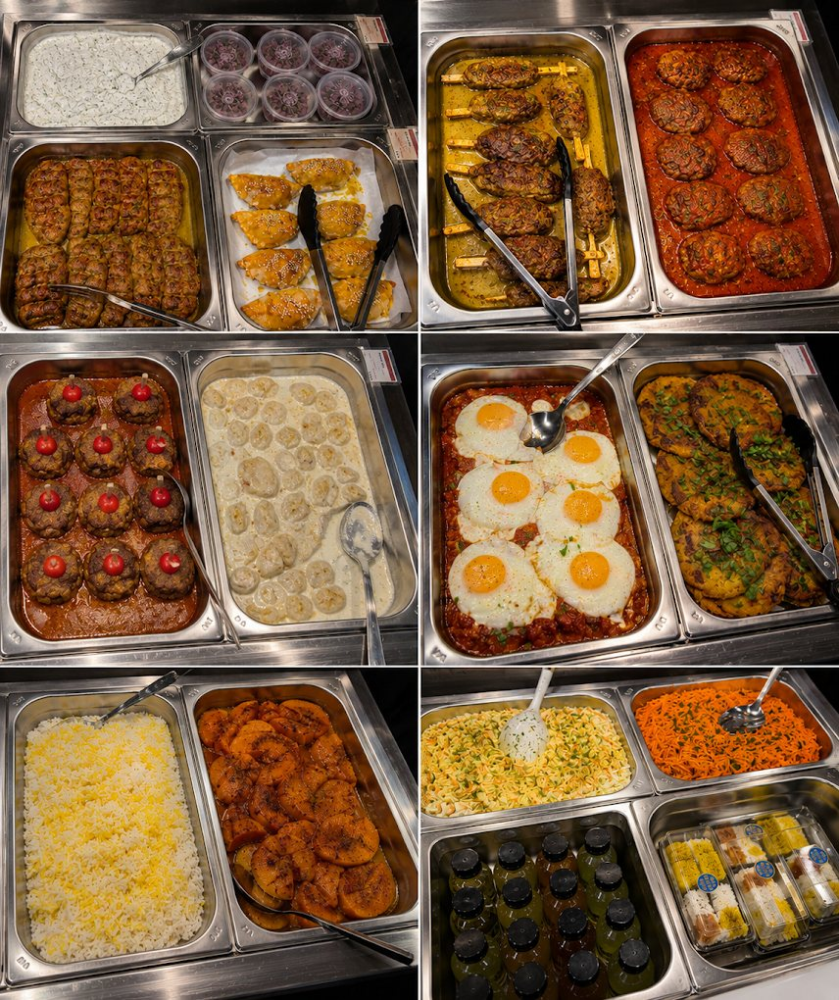

1Mäsové rolky
Char-grilled minced-beef kebab
Minced beef, onion, saffron, sumac · grilled on skewers
tanier so zeleninouBeef
Perzská reštaurácia · Nivy Tower, Bratislava
The green, garlic-and-pomegranate cooking of Rasht — Iran's Caspian-coast city of gastronomy — served buffet-style and made fresh every single day.
From Rasht · Gilan, northern Iran
Our cooking comes from Rasht — the lush, rainy city on Iran's Caspian coast that UNESCO named a City of Gastronomy. Gilani food leans on garlic, pomegranate, walnuts, olive oil and armfuls of fresh herbs, with saffron rice at the centre. We lay it all out buffet-style, so you build the plate you feel like today, then choose your sides.
Denné menu · Fresh each day
Our hot counter rotates through the Persian and Gilani table. Here's the plan for the week — pick your day.
Z našej kuchyne · From our kitchen
Fresh trays laid out through the day — kebabs, stews, saffron rice and more.




Kde nás nájdete
We're on the food level of Nivy Tower, a short walk from Nivy Station. Come for lunch, stay for a slow dinner, or take a plate to go.